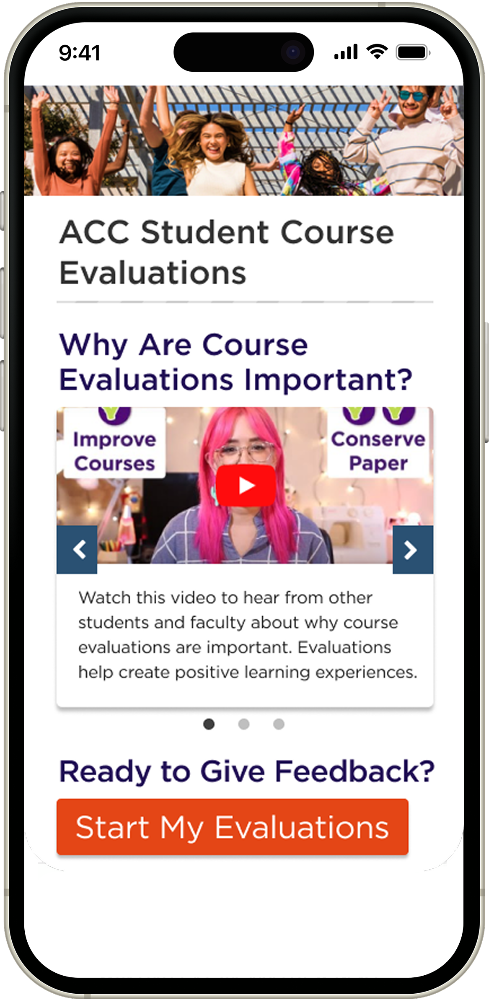
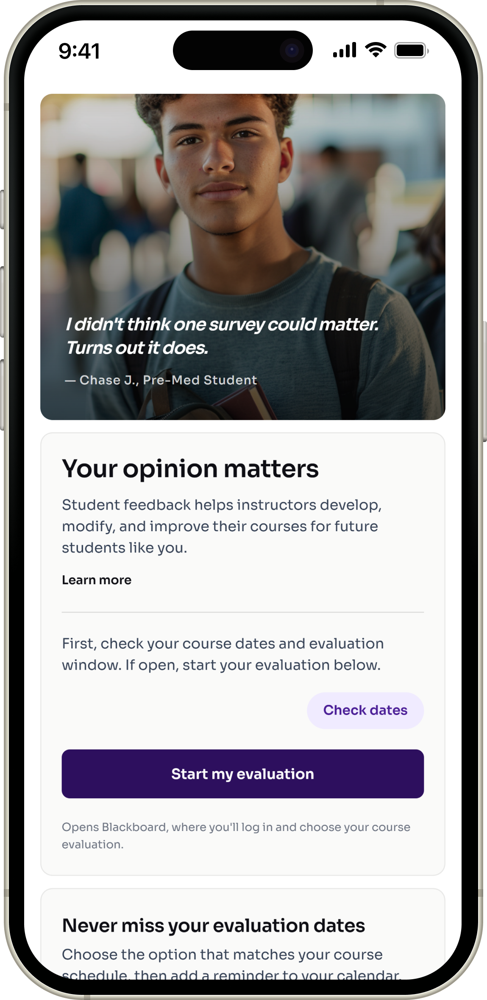
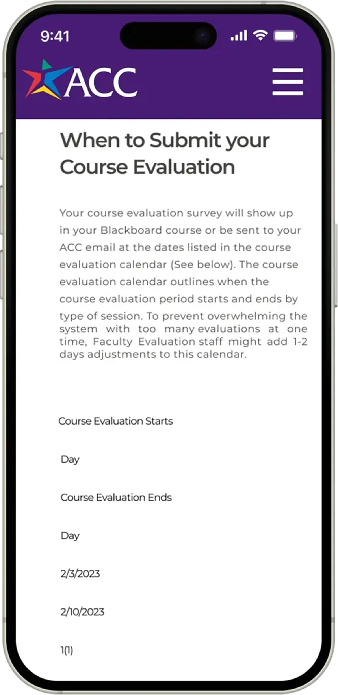
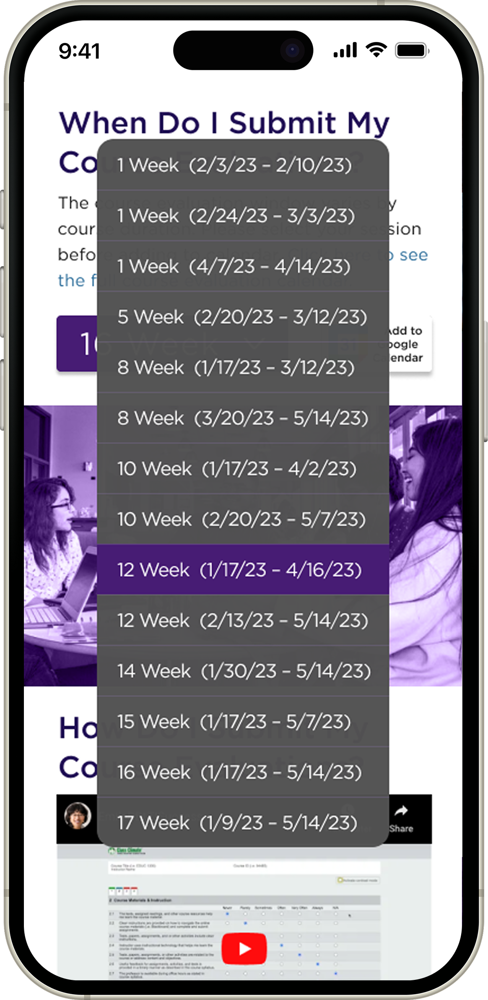
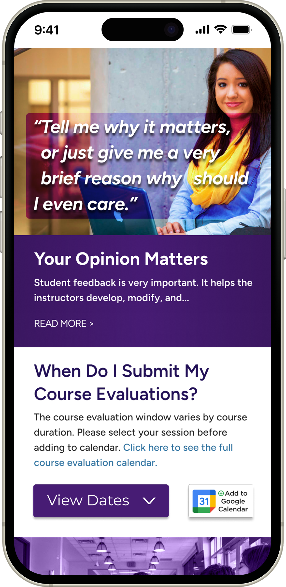
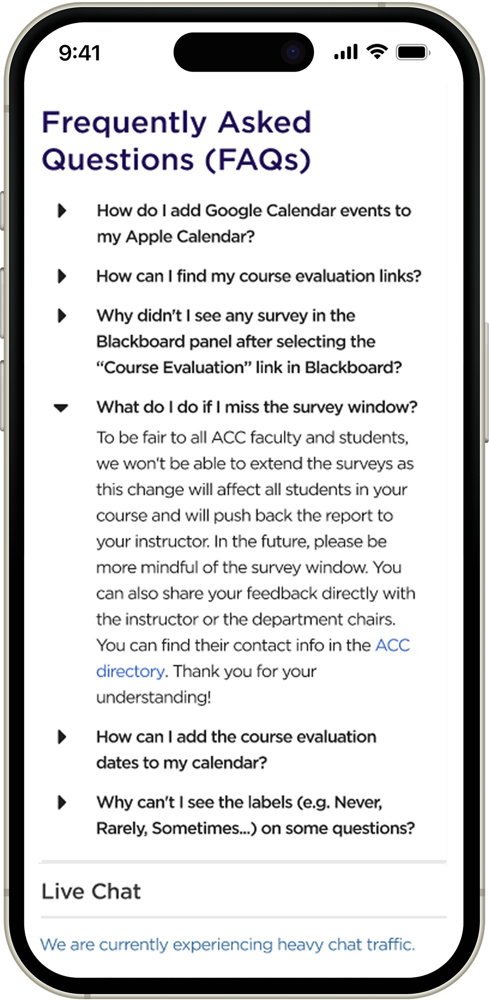

Austin Community College
Course Evaluation Guide
Redesigning Austin Community College’s course evaluation guide to clarify deadlines and improve student participation.


The short version
64% fewer students completed evaluations after ACC moved online.
In 2020, ACC moved from in-class paper evaluations to a digital-only process. Completion dropped from 94% to 34%, even though 80% of students who completed evaluations rated their courses positively.
I partnered with ACC's Teaching, Learning & Excellence Division to identify the barriers and redesign the evaluation guide.
Low participation was visible. The deeper barriers were not.
I used surveys to spot patterns, interviews to understand behavior, and competitive analysis to identify missed opportunities in peer experiences.
Overview
- 10 surveys, 7 interviews · Jan–Apr 2022
- Screener: enrolled for at least one full semester
- Scope: ACC Highland Campus (surveys) + remote sessions (interviews)
Research Methods
- Surveys (n=10): In-person, ACC Highland Campus · participation frequency and perceived value
- Interviews (n=7): Remote, one-on-one, 30 min · ages 18–53, diverse programs and course formats
- Journey mapping: End-to-end, from first hearing about an evaluation to submission
Key Questions
- What barriers are preventing students from completing evaluations?
- Do students believe their feedback has any impact?
- How do students prefer to receive academic reminders?
- What would motivate students to participate more consistently?
Competitive Analysis
Reviewed three Texas community colleges: Lone Star, Houston Community College, San Jacinto. All three explained how to complete evaluations. None showed students what their feedback had changed. This gap directly shaped the "impact showcase" feature in the redesign.
Constraints
- No baseline analytics → relied on interviews and surveys for behavioral patterns
- First-semester students excluded → planned follow-up post-launch
- Small sample (n=10, n=7) → purposive screening; larger survey planned post-launch
- No instructor access → planned stakeholder interviews post-launch
Many students were open to participating, but the experience failed to support their busy schedules, show clear value, or make follow-through easy.
A mobile-first evaluation guide that reinvents the course feedback experience by helping students track deadlines, plan around their schedules, and complete evaluations with less friction.
The page made deadlines harder to find
- Dense date format slowed scanning
- No course-length or deadline cues
- Students had to interpret dates alone

Clearer deadlines, easier follow-through
- Course-length selector organized deadlines
- Calendar reminders supported planning
- Impact data showed why feedback mattered

A sharper version of the same concept
- Stronger craft improved hierarchy
- Cleaner spacing improved scan speed
- Sharper cues reduced hesitation

The redesign reduced errors, clarified deadlines, and helped students better understand why evaluations matter.
Two rounds of moderated testing identified friction in round one and confirmed key improvements in round two. Iterations created a clearer path to completion, stronger deadline awareness, and a more intuitive mobile experience.
Test Setup
- 10 students (5 per round), diverse programs, ages 25–53
- Mix of remote and in-person moderated sessions, 15–30 minutes each
- All sessions recorded · Notes in Notion · Figma prototypes
Insight-to-Feature Mapping
V1 Concept
Four key screens from the original redesign concept.


V2 Redesign
A refreshed exploration of the project using stronger craft and AI-assisted execution.


Explore the redesigned course evaluation experience through an interactive mobile prototype.
This prototype demonstrates a more intuitive, accessible, and student-centered evaluation flow—from checking important dates to sharing feedback that drives meaningful change.
Clearer evaluation windows
Students can quickly see which evaluations are open, upcoming, or closed by course length.
Calendar reminder support
Students can add reminders before evaluation windows close to avoid missing deadlines.
More context around feedback
Students can better understand why evaluations matter and how feedback supports course improvement.
This work gave me a stronger understanding of how UX decisions influence user behavior while aligning with organizational goals.
Continuous collaboration improves outcomes
Collaborating with stakeholders reinforced the importance of balancing organizational goals with user needs throughout the design process.
Behavior is shaped by clarity and context
The project strengthened my understanding of how user follow-through is influenced by cognitive effort and communication clarity—not just interface aesthetics.